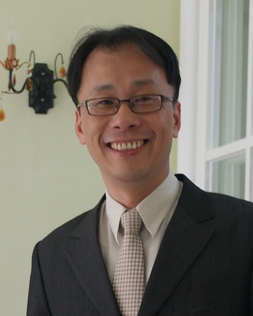

簡介
胡德民教授專長為藥劑學，研究聚焦於藥物遞送系統與藥動學。他於 1989 年、1993 年分別取得國防醫學院藥學系學士與藥學研究所碩士學位，並於 2002 年取得美國俄亥俄州立大學藥劑學博士學位。
1989 年至 2016 年間任教於國防醫學院藥學系，歷任助教、助理教授與副教授；2016 年轉任國立陽明大學藥學系副教授，2020 年起為國立陽明交通大學藥學系教授；2022 年 8 月至 2025 年兼任系主任，並於 2025 年 7 月至 2026 年 7 月赴紐西蘭奧克蘭大學藥學院擔任訪問教授。
在實驗室之外，胡教授亦服務於台灣藥學界，包括衛生福利部中華藥典與藥品相關諮議委員會，以及台灣藥學會。
學歷
藥劑學 博士
美國俄亥俄州立大學
藥學 碩士
國防醫學院 藥學研究所
藥學 學士
國防醫學院 藥學系
經歷
訪問教授（Visiting Professor）
奧克蘭大學藥學院（School of Pharmacy, University of Auckland），紐西蘭；接待教授：Darren Svirskis 教授；2025 年 7 月至 2026 年 7 月
教授（2022 年 8 月至 2025 年兼任系主任）
國立陽明交通大學 藥學系
合聘教師
國立陽明交通大學 藥理學研究所
副教授
國立陽明大學 藥學系；2016–2020 合聘於生物藥學研究所
副教授
國防醫學院 藥學系；2016–2019 兼任教師
助理教授
國防醫學院 藥學系
助教
國防醫學院 藥學系（1989–1991、1993–1997）
學術服務
董事
財團法人醫藥工業技術發展中心
秘書長
台灣藥學會
委員
衛生福利部 中華藥典編修諮議會與諮詢會、藥品諮議小組、藥物食品分析期刊編輯小組
藥物小組委員
衛生福利部 罕見疾病及藥物審議會
審查委員
科技部（現國家科學及技術委員會）生命科學研究發展司 專題研究計畫
委員
考選部 藥師國家考試
專長
藥劑學 · 生物藥劑學 · 藥動學 · 物理藥學
專利
Complex particles for delivering nitric oxide, method of producing the same, and application of the same
Hu et al. US 10,098,966 B2，2018-10-16。
遞送一氧化氮之複合粒子、其製備方法及其應用
發明專利 I637013，專利期限 2018-10-01 至 2037-06-29。
聯絡方式
國立陽明交通大學 藥學系
電子郵件：tehmin@nycu.edu.tw
辦公室電話：(02) 2826-7000 分機 67984
實驗室電話：(02) 2826-7000 分機 66460